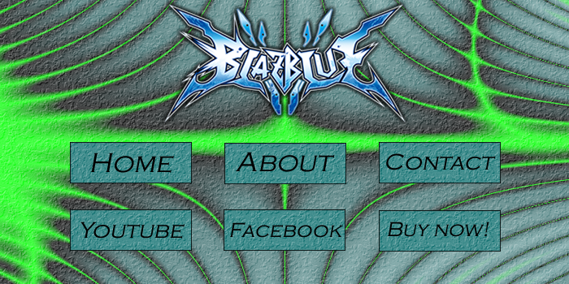
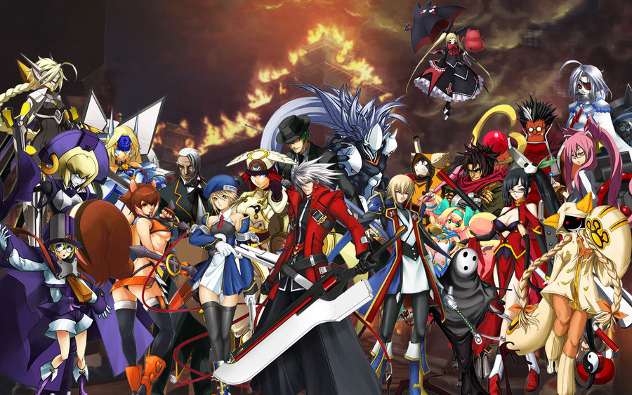

BlazBlue (ブレイブルー Bureiburū?) is a fighting game series developed and published in Japan by Arc System Works, and later localized in North America by Aksys Games and in Europe by Zen United. An anime adaptation aired in the fall of 2013. The BlazBlue series has sold 1.7 million games as of August 2012.
BlazBlue is a traditional 2D fighter where two characters participate in a duel. A round is called a "rebel" and one match can consist of one to five "rebels". To win a round, one player must either incapacitate the other by inflicting damage through various attacks to reduce their opponent's health to zero or by having more remaining health than their opponent after the clock runs out.
Every character has a weak, medium and strong attack, as well as an "unique" technique, called a Drive attack, which is different for each character. Those attacks are also known as "A", "B", "C" and "D". Various combos can be performed by every character through careful input of regular and Drive attacks. A combo consists of two or more consecutive attacks that hit an opponent without them retaliating. As combos become longer, each attack will do less damage than normal to give the opponent a chance to retaliate. Grabs can be incorporated into combos also by pressing the "B" and "C" buttons at the same time. Occasionally, some attacks (e.g. Jin's Hirensou) will use portions of the player's heat gauge at the bottom of the screen. The heat gauge is filled by either dealing or receiving damage. When a character has 50% or more heat, special moves called "Distortion Drives" can be performed. When a Distortion Drive is successfully performed and connects with the opponent, it deals massive damage and is visually flashier than normal attacks.
Along with attacks every character has two types of block. One is the regular block that can be broken with a "Guard Crush". That can be achieved by pushing the "Guard Libra" gauge all the way to the opponent's side through repeated attacks. If the opponent keeps blocking, then their guard can be broken, leaving them open for attack. The second type of block is a Barrier Block, which is initiated by blocking while holding the "A" and "B" buttons at the same time. A Barrier Block cannot be broken like a normal guard, but there is a limit on how long one can be held, which is indicated by the Barrier Gauge. If the Barrier Gauge empties, then the player will receive 150% damage until it regenerates to half-full.
Austin
June 08, 2015
